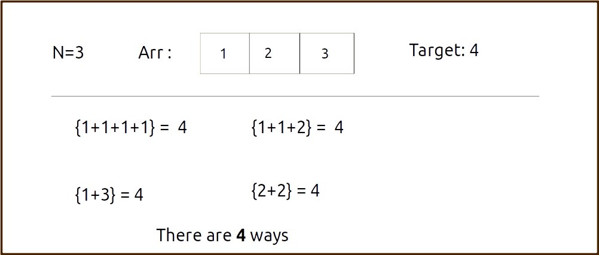
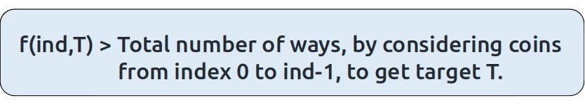
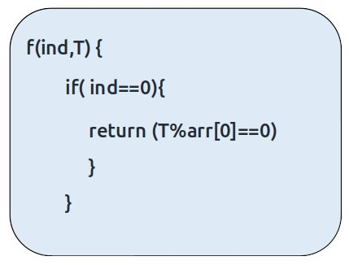
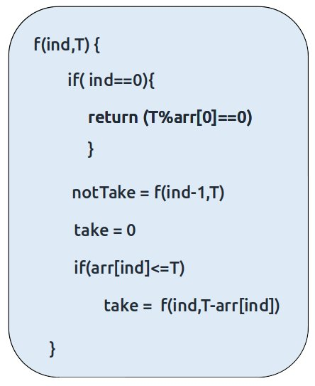
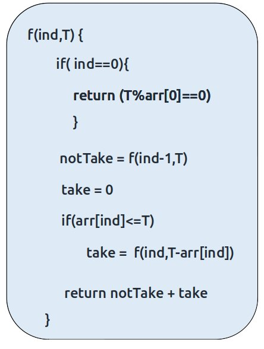

Problem Link: Ways to Make a Coin Change
We are given an array Arr with N distinct coins and a target. We have an infinite supply of each coin denomination. We need to find the number of ways we sum up the coin values to give us the target.
Each coin can be used any number of times.
Examples
Example: 

Disclaimer: Don’t jump directly to the solution, try it out yourself first.
Memorization Approach
Algorithm / Intuition
We will first form the recursive solution by the three points mentioned in Dynamic Programming Introduction.
Step 1: Express the problem in terms of indexes.
We are given ‘n’ coins. Their denomination value is given by the array ‘arr’.So clearly one parameter will be ‘ind’, i.e index up to which the array items are being considered.
There is one more parameter, the given target value “T” which we want to achieve so that while generating subsequences, we can decide whether we want to include a particular coin or not.
So, we can say that initially, we need to find f(n-1, T) where T is the initial target given to us in the question. f(n-1, T) means we are finding the total number of ways to form the target T by considering coins from index 0 to index n-1 of the arr array.

Base Cases:
If ind==0, it means we are at the first item so we have only one coin denomination, therefore the following two cases can arise:
- T is divisible by arr[0] (eg: arr[0] = 4 and T = 12)
In such a case where the target is divisible by the coin element value, we will return 1 as we will be able to form the target.
- T is not divisible by arr[0] (eg: arr[0] = 4 and T = 7)
In all other cases, we will not be able to form the target, so we will return 0.

Step 2: Try out all possible choices at a given index.
We need to generate all the subsequences. We will use the pick/non-pick technique as discussed in this video “Recursion on Subsequences”.
We have two choices:
- Exclude the current element in the subsequence: We first try to find a subsequence without considering the current index coin. If we exclude the current coin, the target sum will not be affected. So we will call the recursive function f(ind-1,T) to find the remaining answer.
- Include the current element in the subsequence: We will try to find a subsequence by considering the current icoin. As we have included the coin, the target sum will be updated to T-arr[ind].
Now here is the catch, as there is an unlimited supply of coins, we want to again form a solution with the same coin value. So we will not recursively call for f(ind-1, T-arr[ind]) rather we will stay at that index only and call for f(find, T-arr[ind]) to find the answer.
Note: We will consider the current coin only when its denomination value (arr[ind]) is less than or equal to the target T.

Step 3: Return the sum of take and notTake
As we have to return the total number of ways we can form the target, we will return the sum of notTake and take as our answer.
The final pseudocode after steps 1, 2, and 3:

Steps to memoize a recursive solution:
If we draw the recursion tree, we will see that there are overlapping subproblems. In order to convert a recursive solution to the following steps will be taken:
- Create a dp array of size [n][T+1]. The size of the input array is ‘N’, so the index will always lie between ‘0’ and ‘n-1’. The target can take any value between ‘0’ and ‘T’. Therefore we take the dp array as dp[n][T+1]
- We initialize the dp array to -1.
- Whenever we want to find the answer of particular parameters (say f(ind,target)), we first check whether the answer is already calculated using the dp array(i.e dp[ind][target]!= -1 ). If yes, simply return the value from the dp array.
- If not, then we are finding the answer for the given value for the first time, we will use the recursive relation as usual but before returning from the function, we will set dp[ind][target] to the solution we get.
Code
#include <bits/stdc++.h>
using namespace std;
// Function to count the number of ways to make change for a given target sum
long countWaysToMakeChangeUtil(vector<int>& arr, int ind, int T, vector<vector<long>>& dp) {
// Base case: if we're at the first element
if (ind == 0) {
// Check if the target sum is divisible by the first element
return (T % arr[0] == 0);
}
// If the result for this index and target sum is already calculated, return it
if (dp[ind][T] != -1)
return dp[ind][T];
// Calculate the number of ways without taking the current element
long notTaken = countWaysToMakeChangeUtil(arr, ind - 1, T, dp);
// Calculate the number of ways by taking the current element
long taken = 0;
if (arr[ind] <= T)
taken = countWaysToMakeChangeUtil(arr, ind, T - arr[ind], dp);
// Store the sum of ways in the DP table and return it
return dp[ind][T] = notTaken + taken;
}
// Function to count the number of ways to make change for the target sum
long countWaysToMakeChange(vector<int>& arr, int n, int T) {
vector<vector<long>> dp(n, vector<long>(T + 1, -1)); // Create a DP table
// Call the utility function to calculate the answer
return countWaysToMakeChangeUtil(arr, n - 1, T, dp);
}
int main() {
vector<int> arr = {1, 2, 3};
int target = 4;
int n = arr.size();
cout << "The total number of ways is " << countWaysToMakeChange(arr, n, target) << endl;
return 0; // Return 0 to indicate successful program execution
}
import java.util.*;
class TUF {
// Recursive function to count the ways to make change
static long countWaysToMakeChangeUtil(int[] arr, int ind, int T, long[][] dp) {
// Base case: If the current index is 0
if (ind == 0) {
// If T is divisible by the first element of the array, return 1, else return 0
if (T % arr[0] == 0)
return 1;
else
return 0;
}
// If the result for this subproblem has already been calculated, return it
if (dp[ind][T] != -1)
return dp[ind][T];
// Calculate the number of ways without taking the current element
long notTaken = countWaysToMakeChangeUtil(arr, ind - 1, T, dp);
// Initialize the number of ways taking the current element as 0
long taken = 0;
// If the current element is less than or equal to T, calculate 'taken'
if (arr[ind] <= T)
taken = countWaysToMakeChangeUtil(arr, ind, T - arr[ind], dp);
// Store the result in the dp array and return it
return dp[ind][T] = notTaken + taken;
}
// Function to count the ways to make change
static long countWaysToMakeChange(int[] arr, int n, int T) {
// Create a 2D array to store results of subproblems
long dp[][] = new long[n][T + 1];
// Initialize the dp array with -1 to indicate that subproblems are not solved yet
for (long row[] : dp)
Arrays.fill(row, -1);
// Call the countWaysToMakeChangeUtil function to calculate the number of ways
return countWaysToMakeChangeUtil(arr, n - 1, T, dp);
}
public static void main(String args[]) {
int arr[] = { 1, 2, 3 };
int target = 4;
int n = arr.length;
// Call the countWaysToMakeChange function and print the result
System.out.println("The total number of ways is " + countWaysToMakeChange(arr, n, target));
}
}
def countWaysToMakeChangeUtil(arr, ind, T, dp):
# Base case: If we have reached the first element in the array.
if ind == 0:
return 1 if T % arr[0] == 0 else 0
# If the result for this state is already calculated, return it.
if dp[ind][T] != -1:
return dp[ind][T]
# Calculate the number of ways when the current element is not taken.
not_taken = countWaysToMakeChangeUtil(arr, ind - 1, T, dp)
# Initialize a variable for the number of ways when the current element is taken.
taken = 0
if arr[ind] <= T:
taken = countWaysToMakeChangeUtil(arr, ind, T - arr[ind], dp)
# Store the total number of ways in the DP table.
dp[ind][T] = not_taken + taken
return dp[ind][T]
# Function to count the number of ways to make change for a given target amount
def countWaysToMakeChange(arr, n, T):
# Create a DP table with initial values as -1.
dp = [[-1 for i in range(T + 1)] for j in range(n)]
return countWaysToMakeChangeUtil(arr, n - 1, T, dp)
def main():
arr = [1, 2, 3]
target = 4
n = len(arr)
print("The total number of ways is", countWaysToMakeChange(arr, n, target))
if __name__ == "__main__":
main()
function countWaysToMakeChangeUtil(arr, ind, T, dp) {
// Base case: If we have reached the first coin in the array
if (ind === 0) {
// Check if 'T' is divisible by the coin value
return (T % arr[0] === 0) ? 1 : 0;
}
// If the result for this combination of 'ind' and 'T' has already been calculated, return it
if (dp[ind][T] !== -1)
return dp[ind][T];
// Initialize variables to store results
let notTaken = countWaysToMakeChangeUtil(arr, ind - 1, T, dp);
let taken = 0;
if (arr[ind] <= T)
taken = countWaysToMakeChangeUtil(arr, ind, T - arr[ind], dp);
// Store and return the result
return dp[ind][T] = notTaken + taken;
}
// Define a function to count the total number of ways to make change for 'T'
function countWaysToMakeChange(arr, n, T) {
// Create a 2D array 'dp' to store dynamic programming results, initialized with -1
const dp = Array.from({ length: n }, () => Array(T + 1).fill(-1));
// Call the recursive utility function to calculate the result
return countWaysToMakeChangeUtil(arr, n - 1, T, dp);
}
// Main function
function main() {
const arr = [1, 2, 3];
const target = 4;
const n = arr.length;
// Call the countWaysToMakeChange function and print the result
console.log("The total number of ways is " + countWaysToMakeChange(arr, n, target));
}
// Call the main function to start the program
main();
Output: The total number of ways is 4
Complexity Analysis
Time Complexity: O(N*T)
Reason: There are N*W states therefore at max ‘N*T’ new problems will be solved.
Space Complexity: O(N*T) + O(N)
Reason: We are using a recursion stack space(O(N)) and a 2D array ( O(N*T)).
Tabulation Approach
Algorithm / Intuition
To convert the memoization approach to a tabulation one, create a dp array with the same size as done in memoization. We can initialize it as 0.
First, we need to initialize the base conditions of the recursive solution.
- At ind==0, we are considering the first element, if the target value is divisible by the first coin’s value, we set the cell's value as 1 or else 0.
- Next, we are done for the first row, so our ‘ind’ variable will move from 1 to n-1, whereas our ‘target’ variable will move from 0 to ‘T’. We will set the nested loops to traverse the dp array.
- Inside the nested loops, we will apply the recursive logic to find the answer of the cell.
- When the nested loop execution has ended, we will return dp[n-1][T] as our answer.
Code
#include <bits/stdc++.h>
using namespace std;
// Function to count the number of ways to make change for a given target sum
long countWaysToMakeChange(vector<int>& arr, int n, int T) {
vector<vector<long>> dp(n, vector<long>(T + 1, 0)); // Create a DP table
// Initializing base condition
for (int i = 0; i <= T; i++) {
if (i % arr[0] == 0)
dp[0][i] = 1;
// Else condition is automatically fulfilled,
// as dp array is initialized to zero
}
for (int ind = 1; ind < n; ind++) {
for (int target = 0; target <= T; target++) {
long notTaken = dp[ind - 1][target];
long taken = 0;
if (arr[ind] <= target)
taken = dp[ind][target - arr[ind]];
dp[ind][target] = notTaken + taken;
}
}
return dp[n - 1][T];
}
int main() {
vector<int> arr = {1, 2, 3};
int target = 4;
int n = arr.size();
cout << "The total number of ways is " << countWaysToMakeChange(arr, n, target) << endl;
return 0; // Return 0 to indicate successful program execution
}
import java.util.*;
class TUF {
// Function to count the ways to make change
static long countWaysToMakeChange(int[] arr, int n, int T) {
// Create a 2D array to store results of subproblems
long dp[][] = new long[n][T + 1];
// Initialize base condition for the first element of the array
for (int i = 0; i <= T; i++) {
if (i % arr[0] == 0)
dp[0][i] = 1;
// Else condition is automatically fulfilled, as dp array is initialized to zero
}
// Fill the dp array using dynamic programming
for (int ind = 1; ind < n; ind++) {
for (int target = 0; target <= T; target++) {
long notTaken = dp[ind - 1][target];
long taken = 0;
if (arr[ind] <= target)
taken = dp[ind][target - arr[ind]];
dp[ind][target] = notTaken + taken;
}
}
return dp[n - 1][T];
}
public static void main(String args[]) {
int arr[] = { 1, 2, 3 };
int target = 4;
int n = arr.length;
// Call the countWaysToMakeChange function and print the result
System.out.println("The total number of ways is " + countWaysToMakeChange(arr, n, target));
}
}
def countWaysToMakeChange(arr, n, T):
# Create a DP table to store the number of ways for different target amounts
dp = [[0 for j in range(T + 1)] for i in range(n)]
# Initialize the base condition for the first element in the array
for i in range(T + 1):
if i % arr[0] == 0:
dp[0][i] = 1
# Else condition is automatically fulfilled, as dp array is initialized to zero
# Iterate through the array elements and target amounts
for ind in range(1, n):
for target in range(T + 1):
# Calculate the number of ways when the current element is not taken
notTaken = dp[ind - 1][target]
# Initialize a variable for the number of ways when the current element is taken
taken = 0
if arr[ind] <= target:
taken = dp[ind][target - arr[ind]]
# Store the total number of ways in the DP table
dp[ind][target] = notTaken + taken
# Return the total number of ways for the given target amount
return dp[n - 1][T]
def main():
arr = [1, 2, 3]
target = 4
n = len(arr)
print("The total number of ways is", countWaysToMakeChange(arr, n, target))
if __name__ == "__main__":
main()
function countWaysToMakeChange(arr, n, T) {
// Create a 2D array 'dp' to store dynamic programming results, initialized with 0
const dp = Array.from({ length: n }, () => Array(T + 1).fill(0));
// Initializing the base condition for the first coin in the array
for (let i = 0; i <= T; i++) {
if (i % arr[0] === 0)
dp[0][i] = 1;
// Else condition is automatically fulfilled,
// as dp array is initialized to zero
}
// Populating the dp array using nested loops
for (let ind = 1; ind < n; ind++) {
for (let target = 0; target <= T; target++) {
const notTaken = dp[ind - 1][target];
let taken = 0;
if (arr[ind] <= target)
taken = dp[ind][target - arr[ind]];
dp[ind][target] = notTaken + taken;
}
}
// The result is stored in the bottom-right cell of the dp array
return dp[n - 1][T];
}
// Main function
function main() {
const arr = [1, 2, 3];
const target = 4;
const n = arr.length;
// Call the countWaysToMakeChange function and print the result
console.log("The total number of ways is " + countWaysToMakeChange(arr, n, target));
}
// Call the main function to start the program
main();
Time Complexity: O(N*T)
Reason: There are two nested loops
Space Complexity: O(N*T)
Reason: We are using an external array of size ‘N*T’. Stack Space is eliminated.
Space Optimization Approach
Algorithm / Intuition
If we closely look the relation,
dp[ind][target] = dp[ind-1][target] ,dp[ind-1][target-arr[ind]]
We see that to calculate a value of a cell of the dp array, we need only the previous row values (say prev). So, we don’t need to store an entire array. Hence we can space optimize it.
Note: We first need to initialize the first row as we had done in the tabulation approach.
Code
#include <bits/stdc++.h>
using namespace std;
// Function to count the number of ways to make change for a given target sum
long countWaysToMakeChange(vector<int>& arr, int n, int T) {
vector<long> prev(T + 1, 0); // Create a vector to store the previous DP state
// Initialize base condition
for (int i = 0; i <= T; i++) {
if (i % arr[0] == 0)
prev[i] = 1; // There is one way to make change for multiples of the first coin
// Else condition is automatically fulfilled,
// as the prev vector is initialized to zero
}
for (int ind = 1; ind < n; ind++) {
vector<long> cur(T + 1, 0); // Create a vector to store the current DP state
for (int target = 0; target <= T; target++) {
long notTaken = prev[target]; // Number of ways without taking the current coin
long taken = 0;
if (arr[ind] <= target)
taken = cur[target - arr[ind]]; // Number of ways by taking the current coin
cur[target] = notTaken + taken; // Total number of ways for the current target
}
prev = cur; // Update the previous DP state with the current state for the next coin
}
return prev[T]; // Return the total number of ways to make change for the target
}
int main() {
vector<int> arr = {1, 2, 3}; // Coin denominations
int target = 4; // Target sum
int n = arr.size(); // Number of coin denominations
// Call the function to calculate and output the total number of ways to make change
cout << "The total number of ways is " << countWaysToMakeChange(arr, n, target) << endl;
return 0; // Return 0 to indicate successful program execution
}
import java.util.*;
class TUF {
// Function to count the ways to make change
static long countWaysToMakeChange(int[] arr, int n, int T) {
// Create an array to store results of subproblems for the previous element
long[] prev = new long[T + 1];
// Initialize base condition for the first element of the array
for (int i = 0; i <= T; i++) {
if (i % arr[0] == 0)
prev[i] = 1;
// Else condition is automatically fulfilled, as prev array is initialized to zero
}
// Fill the prev array using dynamic programming
for (int ind = 1; ind < n; ind++) {
// Create an array to store results of subproblems for the current element
long[] cur = new long[T + 1];
for (int target = 0; target <= T; target++) {
long notTaken = prev[target];
long taken = 0;
if (arr[ind] <= target)
taken = cur[target - arr[ind]];
cur[target] = notTaken + taken;
}
prev = cur;
}
return prev[T];
}
public static void main(String args[]) {
int arr[] = { 1, 2, 3 };
int target = 4;
int n = arr.length;
// Call the countWaysToMakeChange function and print the result
System.out.println("The total number of ways is " + countWaysToMakeChange(arr, n, target));
}
}
def countWaysToMakeChange(arr, n, T):
# Initialize a list 'prev' to store the number of ways for different target amounts
prev = [0] * (T + 1)
# Initialize the base condition for the first element in the array
for i in range(T + 1):
if i % arr[0] == 0:
prev[i] = 1
# Else condition is automatically fulfilled, as 'prev' is initialized to zeros.
# Iterate through the array elements and target amounts
for ind in range(1, n):
# Initialize a list 'cur' to store the number of ways for the current element
cur = [0] * (T + 1)
for target in range(T + 1):
# Calculate the number of ways when the current element is not taken
notTaken = prev[target]
# Initialize a variable for the number of ways when the current element is taken
taken = 0
if arr[ind] <= target:
taken = cur[target - arr[ind]]
# Store the total number of ways in 'cur'
cur[target] = notTaken + taken
# Update 'prev' with the results from 'cur' for the next iteration
prev = cur
# Return the total number of ways for the given target amount
return prev[T]
def main():
arr = [1, 2, 3]
target = 4
n = len(arr)
print("The total number of ways is", countWaysToMakeChange(arr, n, target))
if __name__ == '__main__':
main()
function countWaysToMakeChange(arr, n, T) {
// Initialize an array 'prev' to store dynamic programming results, initialized with 0
let prev = new Array(T + 1).fill(0);
// Initializing the base condition for the first coin in the array
for (let i = 0; i <= T; i++) {
if (i % arr[0] === 0)
prev[i] = 1;
// Else condition is automatically fulfilled,
// as 'prev' array is initialized to zero
}
// Populating the 'cur' array using nested loops
for (let ind = 1; ind < n; ind++) {
// Initialize an array 'cur' for the current iteration
let cur = new Array(T + 1).fill(0);
for (let target = 0; target <= T; target++) {
const notTaken = prev[target];
let taken = 0;
if (arr[ind] <= target)
taken = cur[target - arr[ind]];
cur[target] = notTaken + taken;
}
// Update 'prev' to be the same as 'cur' for the next iteration
prev = [...cur];
}
// The result is stored in the last element of the 'prev' array
return prev[T];
}
// Main function
function main() {
const arr = [1, 2, 3];
const target = 4;
const n = arr.length;
// Call the countWaysToMakeChange function and print the result
console.log("The total number of ways is " + countWaysToMakeChange(arr, n, target));
}
// Call the main function to start the program
main();
Time Complexity: O(N*T)
Reason: There are two nested loops.
Space Complexity: O(T)
Reason: We are using an external array of size ‘T+1’ to store two rows only.
Video Explanation
Special thanks to Anshuman Sharma and Abhipsita Das for contributing to this article on takeUforward. If you also wish to share your knowledge with the takeUforward fam, please check out this article